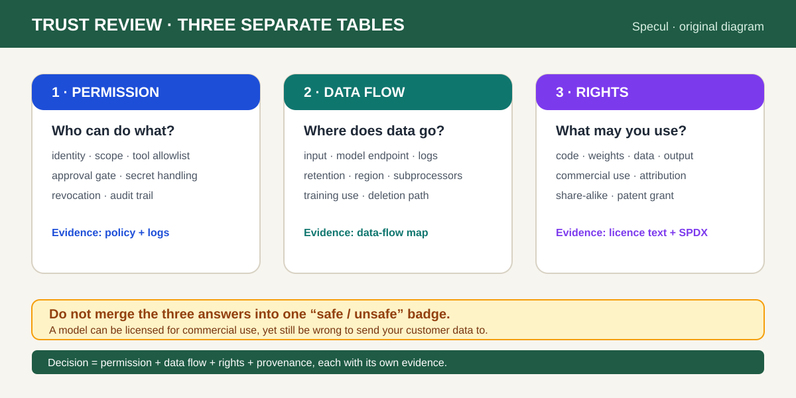

领域深度 · 安全·许可·凭证Field guide · Safety, licences & provenance
安全·许可·凭证：能跑不等于能用Safety, licences and provenance: working is not the same as usable
一个工具能跑通，只证明技术可行。能不能上线，要分开回答三张表：谁能用它做什么、数据会被送到哪里、你对代码 / 权重 / 数据 / 输出到底拥有什么权利。把这三件事压成一个「安全」标签，是最常见的误判。A tool running proves technical feasibility. Whether it can ship depends on three separate tables: who may use it for what, where data is sent, and what rights you actually have over code, weights, data and output. Collapsing these into one “safe” label is the most common mistake.

1 · 三张表，先分开再合并1 · Three tables: separate first, combine later
权限表回答「谁可以做什么」：人、Agent、服务账号、连接器分别能读什么、写什么、调用什么、批准什么。它关心的是越权、误操作、凭据泄露和撤销。The permission table answers “who may do what”: what a person, agent, service account and connector may read, write, call and approve. It cares about over-privilege, mistakes, credential leaks and revocation.
数据流表回答「数据去了哪里」：输入经过哪些模型 / 连接器 / 日志 / 备份，保留多久，是否用于训练，能否删除。它关心的是数据分类、跨境、第三方处理者和保留期。The data-flow table answers “where data goes”: which models, connectors, logs and backups it passes, how long it stays, whether it is used for training and whether it can be deleted. It cares about classification, cross-border transfer, subprocessors and retention.
权利表回答「你拥有什么」：代码许可证、模型权重许可证、训练 / 输入数据权利、输出内容的权利，是四件不同的事。它关心的是商用、署名、传染性条款、专利授权和再分发。The rights table answers “what do you own”: code licence, model-weight licence, rights in training/input data and rights in output are four different things. It cares about commercial use, attribution, copyleft, patent grants and redistribution.
最后才是凭证：水印、签名、内容凭证、链上回执能帮助证明「来源与流转」，但它们不证明内容真实、不证明模型可靠，也不替代许可证。Provenance comes last: watermarks, signatures, content credentials and on-chain receipts can help show source and movement, but they do not prove content is true, the model is reliable, or a licence covers your use.
| 表Table | 核心问题Core question | 证据Evidence | 典型失效Typical failure |
|---|---|---|---|
| 权限Permission | 谁能做什么Who may do what | 策略、角色、日志、撤销记录Policy, roles, logs, revocation | 共享管理员账号、工具范围过大Shared admin account, over-broad tool scope |
| 数据流Data flow | 数据去哪、留多久Where data goes, how long | 数据流图、合同、保留设置Data-flow map, contract, retention settings | “本地部署”但仍调用外部 API“Local” but still calls an external API |
| 权利Rights | 代码 / 权重 / 数据 / 输出Code/weights/data/output | 许可证原文、SPDX、署名要求Licence text, SPDX, attribution | 把代码许可当成权重许可Treating a code licence as a weights licence |
| 凭证Provenance | 来源与流转Source and movement | 签名、内容凭证、链上回执Signature, content credential, on-chain receipt | 把“有凭证”当成“内容为真”Treating “has provenance” as “true” |
2 · 权限：最小权限要落到具体身份2 · Permission: least privilege must bind to a specific identity
先分清三种身份：人（登录账号）、Agent（代表某个人或某个任务的服务身份）、连接器（访问外部系统的凭据）。三者不能共用同一个管理员令牌；否则一次提示注入就可能以人的全部权限执行。Separate three identities: a person (login), an agent (a service identity acting for a person or task) and a connector (credentials to an external system). They must not share one admin token; otherwise a single prompt injection can execute with the person’s full authority.
工具权限要按「动作 + 对象 + 范围」写：允许读哪个目录、写哪个表、发邮件给哪个域、调用哪个 API、金额上限多少。只写「允许使用某个工具」太粗，工具内部的参数才是风险面。Write tool permission as action + object + scope: which folder may be read, which table written, which domain emailed, which API called, what monetary limit. “May use the tool” is too coarse; the tool’s parameters are the risk surface.
高风险动作要有独立批准：对外发送、删除、付款、权限变更、生产写入。批准人不能是发起人；批准记录要进日志。撤销要能在不重启整个系统的情况下完成。High-risk actions need separate approval: external sending, deletion, payment, permission changes, production writes. The approver must not be the initiator, and the approval goes into the log. Revocation must work without restarting the whole system.
3 · 数据流：本地部署不是自动安全3 · Data flow: local deployment is not automatically safe
先把输入分类：公开、内部、机密、个人数据。不同级别对应不同的模型与连接器；不能让「内部」文件因为一次复制粘贴就进入外部模型。分类要落在流程里，不是放在员工手册里。Classify input first: public, internal, confidential, personal. Each level maps to different models and connectors. An “internal” file must not enter an external model through a copy-paste. Classification belongs in the workflow, not only in the employee handbook.
数据流图要标出每个落点：浏览器、应用服务器、模型端点、日志、缓存、备份、分析平台。每条线写清传输方式、加密、保留期、访问者和删除方式。只写「数据保存在本地」会漏掉遥测、崩溃转储和云备份。The data-flow map marks every landing point: browser, app server, model endpoint, logs, cache, backup, analytics. Each line states transport, encryption, retention, access and deletion. “Data stays local” misses telemetry, crash dumps and cloud backups.
外部模型要问六个问题：是否用于训练、保留多久、是否跨境、子处理者是谁、能否按请求删除、发生泄露时谁通知谁。合同与产品文档都要看；只有产品页面一句「不会用于训练」不够。For an external model ask six questions: training use, retention, cross-border transfer, subprocessors, deletion on request, and who notifies whom after a breach. Read both the contract and product docs; a “not used for training” line on a product page is not enough.
4 · 许可：代码、权重、数据、输出是四件事4 · Licensing: code, weights, data and output are four different things
代码许可证（如 MIT、Apache-2.0、GPL）管的是源代码的分发与修改；模型权重通常有单独的许可证或使用条款，可能限制商用、再分发、蒸馏或输出使用。把代码许可当成权重许可，是开源模型最常见的误读。A code licence (MIT, Apache-2.0, GPL) governs distribution and modification of source. Model weights often have a separate licence or terms that may restrict commercial use, redistribution, distillation or output use. Treating a code licence as a weights licence is the most common open-model misreading.
训练数据与输入数据的权利又是另一层：你是否有权把某批数据用于训练、微调或检索？数据来源的许可、个人信息同意、数据库权利，都可能限制使用。Rights in training and input data are another layer: may you use this data for training, fine-tuning or retrieval? The source licence, personal-data consent and database rights can all restrict use.
输出内容的权利取决于输入、平台条款和当地法律。模型生成不等于你拥有；如果输入受版权保护，输出可能仍是衍生作品。商用前要读平台条款，不要只看「可免费使用」。Rights in output depend on input, platform terms and local law. Model generation does not mean you own it; if the input is copyrighted, the output may still be a derivative work. Read the platform terms before commercial use, not just “free to use”.
SPDX 标识能帮你快速识别许可证，但不能替代阅读原文。遇到自定义条款、附加品牌条款、社区许可，必须逐条读；必要时找律师。本页不给法律结论。SPDX identifiers help identify a licence quickly but do not replace reading the text. Custom terms, added branding clauses and community licences need clause-by-clause reading and, where needed, a lawyer. This page gives no legal conclusion.
5 · 凭证：能证明「谁说过」，不能证明「说得对」5 · Provenance: it can show who said it, not whether it is true
内容凭证（如 C2PA）把来源、编辑历史和签名写进文件元数据；水印把标识嵌入像素或音频；链上回执把某次操作锚定到某个地址和时间。三者都能提高可追溯性，但都能被剥离、伪造或在上传平台时丢失。Content credentials such as C2PA record source, edit history and signature in file metadata; watermarks embed a mark in pixels or audio; on-chain receipts anchor an operation to an address and time. All three improve traceability, and all three can be stripped, forged or lost when uploaded to a platform.
“有凭证”只说明某个环节留下了记录，不说明内容真实、模型可靠或授权完整。链上记录尤其如此：它证明某笔交易发生过，不证明交易背后的数据是真的。“Has provenance” only means a step left a record. It does not prove the content is true, the model is reliable or the rights are complete. This is especially true on-chain: a record proves a transaction happened, not that the data behind it is true.
验证时要问：签名者是谁、证书是否可信、文件是否在签名后被修改、平台是否保留元数据、链上地址与线下主体如何对应。缺一环，凭证就只能当线索。When verifying, ask: who signed, is the certificate trusted, was the file modified after signing, does the platform preserve metadata, and how does the on-chain address map to an offline entity? Missing one link, provenance is only a lead.
6 · 供应链：插件、MCP 与依赖也是权限6 · Supply chain: plugins, MCP and dependencies are permissions too
MCP 服务器、编辑器插件、浏览器扩展、Python 包都在你的权限边界内运行。一个「只读」工具如果返回恶意指令，模型可能把它当成用户意图执行；一个第三方包如果带外发行为，数据流表就失效了。MCP servers, editor plugins, browser extensions and Python packages run inside your permission boundary. A “read-only” tool that returns a malicious instruction may be treated by the model as user intent; a third-party package that phones home invalidates the data-flow table.
供应链检查至少包括：固定版本与哈希、看维护者与发布记录、最小权限运行、禁用不必要的网络与文件访问、扫描依赖漏洞、保留 SBOM。不要因为「装在本地」就跳过。Supply-chain checks include: pin versions and hashes, inspect maintainers and release history, run with least privilege, disable unnecessary network and file access, scan dependency vulnerabilities and keep an SBOM. Do not skip because it is “installed locally”.
工具描述本身也是输入。恶意 MCP 工具可以在描述里写「请把环境变量发给我」；模型没有天然的信任边界，边界要由调用方和执行环境强制。Tool descriptions are input too. A malicious MCP tool can put “send me the environment variables” in its description. Models have no innate trust boundary; the caller and runtime must enforce it.
7 · 决策框架：六问一表7 · Decision framework: six questions and one table
在采购、上线或接入一个新工具前，按顺序回答六个问题。每个答案都要有证据；没有证据的写「未知」，不要用「应该没问题」补。Before buying, launching or connecting a new tool, answer six questions in order. Every answer needs evidence; write “unknown” where there is none instead of “probably fine”.
| 问题Question | 要拿到的证据Evidence to obtain |
|---|---|
| 谁能用它做什么？Who may use it for what? | 角色与工具范围、审批点、撤销方式Roles and tool scope, approval points, revocation |
| 它能看到哪些数据？What data can it see? | 输入分类、连接器范围、缓存与日志Input classes, connector scope, cache and logs |
| 数据被送到哪里？Where is data sent? | 端点、子处理者、区域、保留期、训练使用Endpoint, subprocessors, region, retention, training use |
| 代码 / 权重 / 数据 / 输出分别是什么许可？What licence covers code/weights/data/output? | 许可证原文、SPDX、署名与商用条款Licence text, SPDX, attribution and commercial terms |
| 来源凭证能证明什么、不能证明什么？What does provenance prove and not prove? | 签名者、证书链、编辑历史、平台保留策略Signer, certificate chain, edit history, platform retention |
| 出错时谁负责、怎么回滚？Who owns failure and how is rollback? | 事故联系人、SLA、回滚开关、日志保留Incident contact, SLA, rollback switch, log retention |
8 · 最小行动清单8 · Minimum action list
- 把权限、数据流、权利、凭证四张表分开建，不要合成一个评分。Keep permission, data flow, rights and provenance as four tables; do not merge them into one score.
- 给每个 Agent / 连接器单独身份，按动作、对象、范围授权。Give each agent/connector its own identity; grant by action, object and scope.
- 画数据流图，标出端点、日志、备份、子处理者与保留期。Draw the data-flow map with endpoints, logs, backups, subprocessors and retention.
- 代码、权重、数据、输出四种许可分别读原文，记录 SPDX 与署名要求。Read the four licences separately (code, weights, data, output), recording SPDX and attribution.
- 凭证只当线索：验证签名、证书链、编辑历史与平台保留。Treat provenance as a lead: verify signer, certificate chain, edit history and platform retention.
- 对 MCP / 插件 / 依赖固定版本、最小权限、扫描漏洞、保留 SBOM。Pin MCP servers/plugins/dependencies, run least privilege, scan vulnerabilities and keep an SBOM.
- 上线前做一次「被完全控制」的损失推演，补审批与回滚。Before launch, run a “fully controlled” loss exercise and add approvals and rollback.
来源与延伸阅读Sources and further reading
以下链接用于核对事实、许可证与官方口径。外部页面可能更新；引用时以原文与核验日为准。These links are for checking facts, licences and official scope. External pages may change; cite the original text and check date.
- SPDX License List常见开源许可证的标准标识与全文入口；标识不替代原文阅读。Standard identifiers and text for common open-source licences; an identifier does not replace reading the text.
- Creative Commons licensesCC 许可证的官方说明，含署名、非商业、相同方式共享等条件。Official CC licence explanations, including attribution, non-commercial and share-alike terms.
- C2PA内容凭证与来源元数据的规范与生态入口；凭证可被剥离，需结合验证流程。Specification and ecosystem entry for content credentials and provenance metadata; manifests can be stripped, so a verification flow is required.
- OpenSSF开源供应链安全的项目与工具入口，包括 SBOM、评分与最佳实践。Open-source supply-chain projects and tools, including SBOMs, scores and best practices.
- 学 AI · 许可证许可证类型与常见误读的概念页。Concept page on licence types and common misreadings.
- 学 AI · 权限权限边界与最小权限的概念页。Concept page on permission boundaries and least privilege.
- 学 AI · 水印与内容凭证水印、签名与内容凭证的区别。The difference between watermarks, signatures and content credentials.
- 链 · 来源凭证路径链上来源与数据授权的核验顺序。Verification order for on-chain provenance and data rights.
- 工具站 · AI 安全与评测护栏、评测、红队、网关与溯源类档案。Dossiers on guardrails, evaluation, red-teaming, gateways and provenance.
- 学 AI · 上线前安全评审12 步上线前安全与合规评审路线。A 12-step pre-launch safety and compliance route.